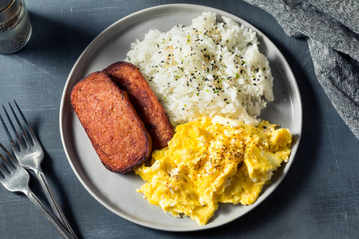

Spam n' Eggs Recipe

A Brief Description...
Spam and eggs are a simple and easy Hawaiian classic.
Ingredients for Spam n' Eggs
- Spam
- Eggs
- OPTIONAL:Rice or bread
Steps
- Heat up a small pan on medium
- Slice spam into desired shape
- When pan is hot, add spam to pan
- Cook spam until brown
- Remove spam and set aside, leaving the rendered fat in the pan
- Cook eggs any way that you desire
- Scrambled is a classic, but I prefer a gooey fried egg or sunny side up
- When egg is cooked, plate with spam
- OPTIONAL: Plate over rice
- Serve and enjoy!
Home